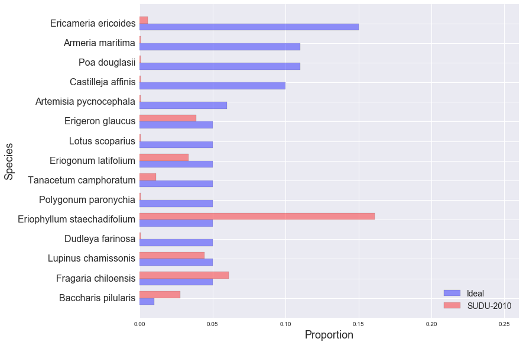

golden gate national parks conservancy: scrub mix
SUDU-2010
EAPO-2011
NMS-2010
NMS-2011
NMS-2012
NUWO-2010
NUWO-2011
NUWO-2012
SUDU-2008
SUDU-2009
SUDU-2010
SUDU-2011
SUDU-2012
Ideal and Observed Scrub Mix, SUDU-2010:
Other Species in SUDU-2010 Sample:
| Species | Observed % |
|---|---|
| Bromus diandrus | 12.22% |
| Artemisa pycnocephala | 10.00% |
| Bare ground | 7.78% |
| Grindelia hirsutula var. hirsutula | 6.67% |
| Marah fabaceus | 3.33% |
| Ambrosia chamissonis | 3.33% |
| Achillea millefolium | 2.22% |
| Lupinus arboreus | 1.67% |
| Eschscholzia californica | 1.67% |
| Avena sp. | 1.67% |
| Rumex salicifolius | 1.67% |
| Polygonum paranychium | 1.11% |
| Albizia lophantha | 0.56% |
| Anagalis arvensis | 0.56% |
| Lobularia maritima | 0.56% |
| PLANT DEBRIS LITTER | 0.56% |
| Abronia latifolia | 0.56% |
| Rumex crispus | 0.56% |
| Ehrharta erecta | 0.56% |
| Leymus sp. | 0.56% |
| Tetragonia tetragonioides | 0.56% |
| Leymus mollis | 0.56% |
| Scrophularia californica | 0.56% |
| Juncus lesuerii | 0.56% |
| Castilleja sp. | 0.56% |
| Cardionema radicata | 0.56% |
| Rubus ursinus | 0.56% |